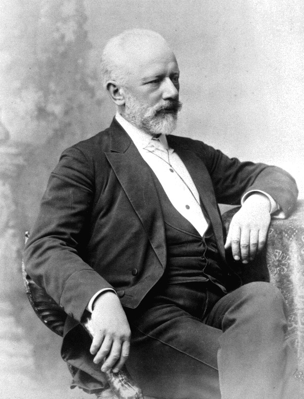

Pyotr Ilyich Tchaikovsky
표트르 일리치 차이콥스키 · 1840–1893
러시아 활동기의 두 실내악 작품. 모스크바 음악원 교수 시절의 현악 4중주와, 피렌체 여행 뒤 귀국해 완성한 현악 6중주.
- 1871 · Op.11 제2악장 · 차이콥스키 30세
- 1890 · Op.70 · 차이콥스키 50세
- 1891–92 · Op.70 개정 · 차이콥스키 51세
시간은 참고 연주의 대략적인 길이 · 나이는 표기한 작곡·개작·출판 시점의 만 나이

표트르 일리치 차이콥스키 · 1840–1893
러시아 활동기의 두 실내악 작품. 모스크바 음악원 교수 시절의 현악 4중주와, 피렌체 여행 뒤 귀국해 완성한 현악 6중주.
약음기를 낀 현악기의 부드러운 음색 · 민요 선율과 또 하나의 서정적 주제가 교차하는 느린 악장 · 길게 이어지는 노래와 pizzicato 반주의 대비
모스크바 음악원에서 가르치던 30세 차이콥스키가 자신의 작품으로 꾸민 음악회를 위해 1871년 2월 작곡. 《현악 4중주 제1번》 전체 중 이번 프로그램은 느린 제2악장만 연주.
카멘카에서 들은 민요가 첫 주제의 바탕. 1876년 톨스토이가 이 악장을 듣고 감동한 일이 작곡가의 편지에 기록. 이후 첼로와 현악합주 편곡 등으로도 널리 알려졌으며, 이번 편성은 원래의 현악 4중주.
작곡·판본 자료 ↗바이올린·비올라·첼로 각 두 대를 위한 현악 6중주. 풍성한 선율과 여섯 악기의 긴밀한 대화가 네 악장에 걸쳐 이어지며, 서정성과 강한 에너지가 교차하는 구성. 격정적인 첫 악장과 노래하는 제2악장, 춤과 대위적 전개를 거쳐 D장조로 마무리하는 피날레.
차이콥스키가 남긴 유일한 현악 6중주. 1890년 피렌체에 머물며 오페라 《스페이드의 여왕》을 작곡한 뒤, 러시아로 돌아와 그해 여름 프롤롭스코예에서 완성한 작품.
상트페테르부르크 실내악협회에 약속한 헌정 작품. 편지에 남은 여섯 독립 성부의 균형에 대한 고민과 1891–1892년 개작의 과정. 후기 실내악에서 관현악적인 규모와 여섯 독주 성부를 결합한 사례.
공연 팸플릿에서는 제목과 달리 피렌체의 특정 풍경을 직접 묘사한 작품으로 보기보다, 여섯 악기가 주고받는 대화에 주목.
작곡·판본 자료 ↗15:30부터 입장
공연 30분 전 · 1층 카페 웰컴 드링크
7호선 청담역 8번 출구 · 도보 약 10분
주차 공간 협소 · 대중교통 이용 권장
Serenade for Strings in C major, Op.48 · II. Valse
3박자의 춤 리듬 위로 매끄럽게 이어지는 선율. 네 악장으로 이루어진 《현을 위한 세레나데》 중 두 번째 악장을 들려준 앙코르.
작품·작곡 자료 ↗with EJ Shin
태풍이 올 듯 비바람이 거셌던 날. 미술작품이 걸린 갤러리에서 1열로 마주한 현악 실내악. 하우스 콘서트처럼 느껴지는 공간이어서 더욱 좋았던 자리.
피아니스트로도 알고 있던 다니엘 린데만. 한국어로 대화를 풀어가는 감각과 진행·인터뷰의 센스가 새롭게 인상적. 연주자들의 이야기를 자연스럽게 이끌어내는 진행도 좋았던 공연.
연주자들의 자녀 이야기와 바다 수영·러닝 같은 취미를 들을 수 있었던 자리. KBS교향악단 안에 러닝 동아리가 있다는 이야기도 흥미로운 대목.
피렌체의 풍경을 잘 알지 못해서인지, 도시의 묘사보다는 감정의 표현이 더 강하게 느껴졌던 《피렌체의 추억》. 악기 하나하나가 서로 말을 주고받는 듯한 느낌.
오케스트라에서는 전체의 소리에 맞춰 개인의 색채를 조율하고, 개인 활동에서는 자신의 색채를 펼칠 기회가 필요하다는 설명이 인상적. 각자의 의상을 입고 자신의 이야기를 들려준 단원들. 음악과 함께 개인의 모습과 이야기가 살아난 점도 좋았던 시간.